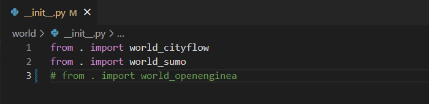
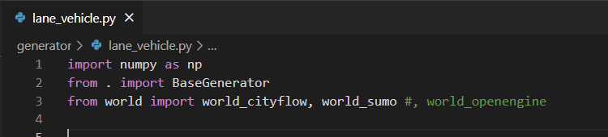
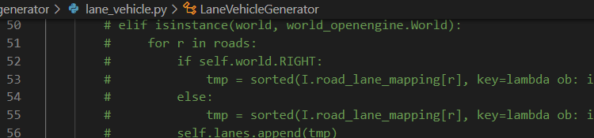

Install¶
Hands on Experience👉Colab¶
Install on your device with Source Code¶
LibSingal provides installation from source code.
Please execute the following command to install and configure our environment.
First, despite any OS(Linux, Windows, MacOS, etc), you need to get our source code:
mkdir DaRL
cd DaRL
git clone --branch doc_ver https://github.com/DaRL-LibSignal/LibSignal.git
cd LibSignal
Use anaconda to manage your environment and package, If you don’t have one, see here Then please find your corresponding platform and follow instructions below:
On MacOS¶
create your own conda environment:
conda create -n testlibsignal python=3.7
conda activate testlibsignal
Open the command line and Install the required env info:
pip install -r requirements.txt
pip install cmake
Install the pytorch that suits your machine, or simplest way:
pip install torch
If you encounter problem like: ‘EntryPoints’ object has no attribute ‘get’, please do follow:
pip install importlib-metadata==4.13.0
pip install pfrl
Then when you conduct
python run.py
You are expected to see ‘ModuleNotFoundError: No module named ‘cityflow’, that’s what we are doing next:
Install cityflow follow the instructions here or simplest way:
git clone https://github.com/cityflow-project/CityFlow.git
cd CityFlow
pip install .
Then go one step back to the root folder of Libsignal where stores “run.py” and run again by
cd ..
python run.py
you can also run the file in your IDE! Congrats，your first attempt is successful! 🎉🎉🎉
On Linux¶
Install cityflow follow the instructions here:
Install sumo follow the instructions here:
Stay at the root folder of cloned repository, and then
Open the command line and Install the required env info:
pip install -r requirements.txt
pip install cmake
If you found something missing, eg: lmdb, install as follow:
pip install lmdb
One Click from run.py with default configurations: As an example, we set DQN with cityflow as default detailed config settings can be found at Document
On Windows¶
You could visit the instructions Doc for detailed steps and error solutions.
Please use WSL or Docker first:
install WSL
install Docker
Install cityflow follow the instructions here
Install sumo follow the instructions here
Stay at the root folder of cloned repository, and then
Open the command line and Install the required env info:
pip install -r requirements.txt
pip install cmake
If you found something missing, eg: lmdb, install as follow:
pip install lmdb
One Click from run.py with default configurations: As an example, we set DQN with cityflow as default detailed config settings can be found at Document
Simulator environment configuration¶
Though CityFlow and SUMO are stable under Windows and Linux systems, we still recommend users work under the Linux system. Currently, CBEngine is stable under the Linux system.
CityFlow Environment¶
To install CityFlow simulator, please follow the instruction on CityFlow Doc
sudo apt update && sudo apt install -y build-essential cmake
git clone https://github.com/cityflow-project/CityFlow.git
cd CityFlow
pip install .
To test configuration:
import cityflow
env = cityflow.Engine
SUMO Environment¶
To install SUMO environment, please follow the instruction on SUMO Doc
sudo apt-get install cmake python g++ libxerces-c-dev libfox-1.6-dev libgdal-dev libproj-dev libgl2ps-dev swig
git clone --recursive https://github.com/eclipse/sumo
export SUMO_HOME="$PWD/sumo"
mkdir sumo/build/cmake-build && cd sumo/build/cmake-build
cmake ../..
make -j$(nproc)
To test installation:
cd ~/DaRL/sumo/bin
./sumo
To add SUMO and traci model into system PATH, execute code below:
export SUMO_HOME=~/DaRL/sumo
export PYTHONPATH="$SUMO_HOME/tools:$PYTHONPATH"
To test configuration:
import libsumo
import traci
CBEngine¶
CBEngine currently works stably under the Linux system; we highly recommend users choose Linux if we plan to conduct experiments under the CBEinge simulation environment. (Currently not available)
Requirment¶
Our code is based on Python version 3.9 and Pytorch version 1.11.0. For example, if your CUDA version is 11.3 you can follow the instruction on PyTorch
pip3 install torch torchvision torchaudio --extra-index-url https://download.pytorch.org/whl/cu113
pip install -r requirements.txt
Selective agents¶
We also support agents implemented based on other libraries
# Colight Geometric implementation based on default environment mentioned in Requirment
pip install torch-scatter torch-sparse torch-cluster torch-spline-conv torch-geometric -f https://data.pyg.org/whl/torch-1.11.0+cu113.html
# ppo_pfrl implementation
pip install pfrl
Detailed instrcuctions can be found on page Pytorch_geometric and PFRL. After installation, user should uncomment code in PATH ./agent/__init__.py
# from .ppo_pfrl import IPPO_pfrl
# from colight import CoLightAgent
selective simulation environment¶
If users only need some specific simulation environments, please comment on the respective codes following the instructions below.



Now, you can use LibSignal;for more details, please refer to Quick Start.